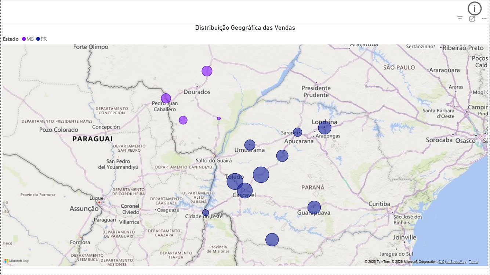
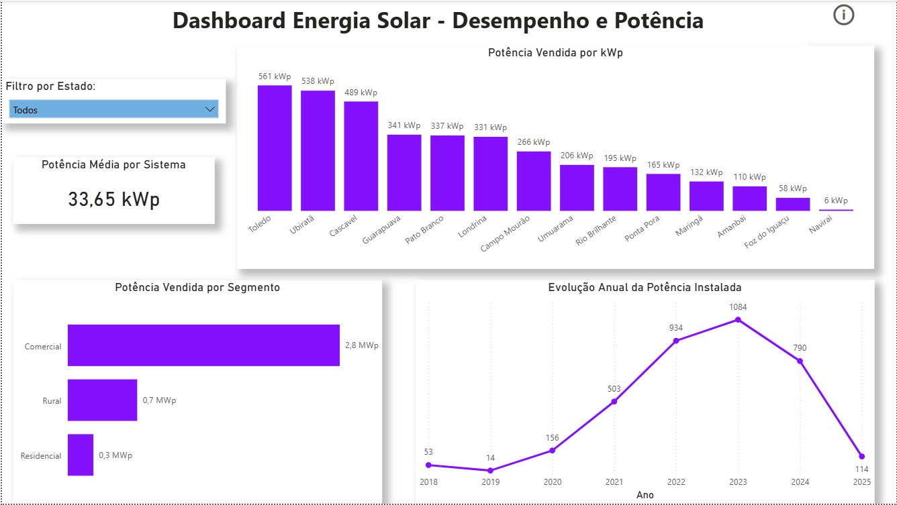
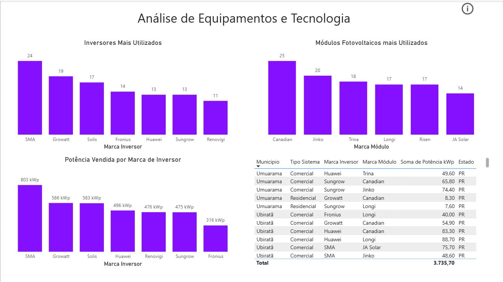
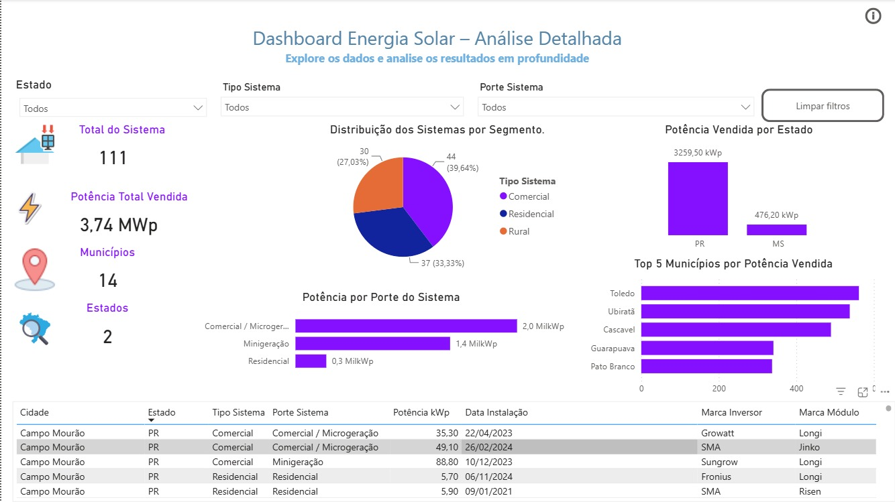
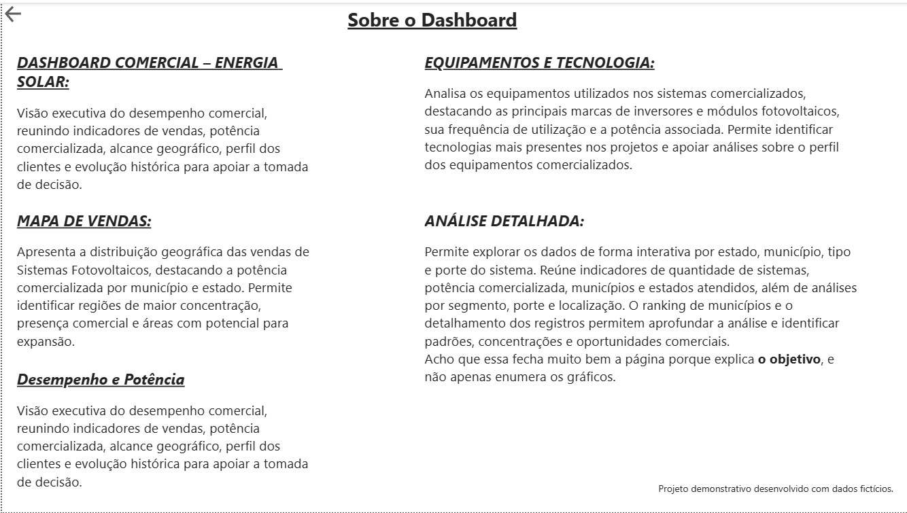

Visão Geral do Projeto
Projeto demonstrativo desenvolvido em Power BI para análise de indicadores comerciais e técnicos do setor de energia solar fotovoltaica.
O dashboard apresenta potência comercializada, quantidade de sistemas, distribuição geográfica das vendas, evolução histórica, desempenho por segmento e análise dos equipamentos utilizados, incluindo inversores e módulos fotovoltaicos.
As visualizações permitem identificar concentrações de vendas, comparar municípios e avaliar o perfil dos sistemas comercializados.
Dados fictícios utilizados para fins de portfólio.
Galeria do Dashboard





